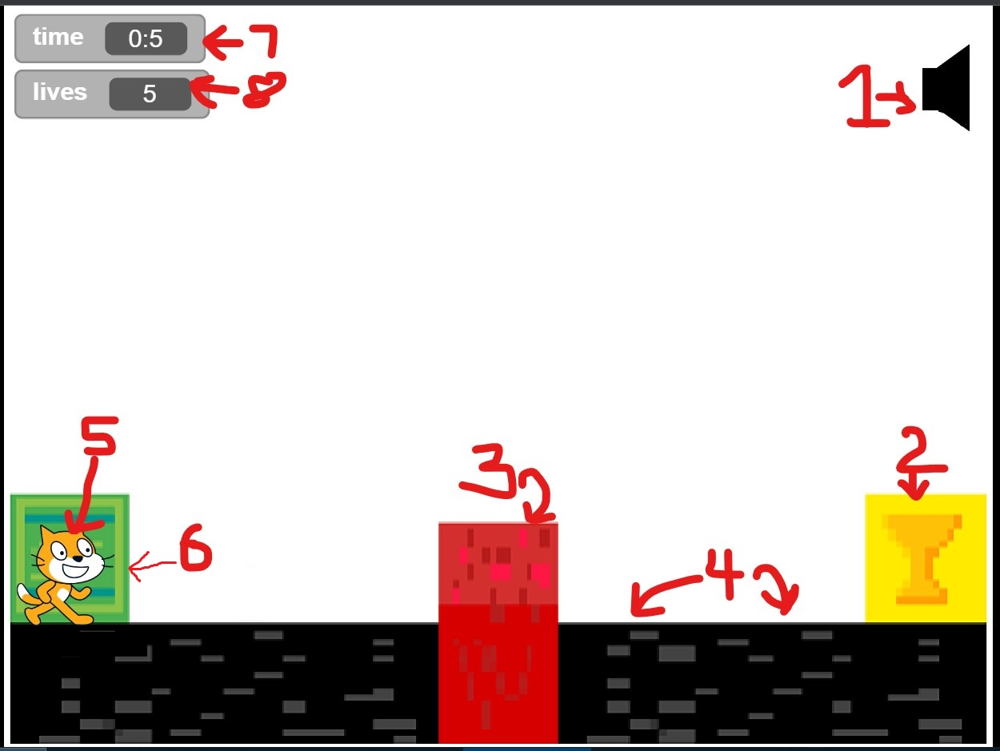

>Cat Jump is a Game That Features a Cat Going to its home.
>The Cat has 7 lives to survive. If you step on the lava, The Cat's lives decrease by 1.
>If 0 lives are remaining, The game will freeze and show a Game Over screen. You have the option to play again.
>Touch the yellow box with a trophy to proceed to the next level.
>press q to quit.
The Elements in the Game screen.

Updated 19/3/22 (V3.4.0)
1. Time - Displays the time elapsed after the start of the game.
2. Lives - Displays the number of lives left. if this # value is 0, You instantly lose.
3. Level - Displays the level that is currently displayed.
4. Mute/Unmute audio - Mutes or unmutes audio according to the command you type below in the text box.
5. Help button - displays this page in-game.
6. trophy box - Touch this and you will progress to the next level.
7. Black Ground - Where the cat stands (and also lives 🙂 )
8. Lava - Don't touch this.. No really! Touching this will reduce #1 life. ^check #2^
9. ST block - ST stands for START and where the cat begins its journey in each level.
10. The cat - The main guy itself. use: